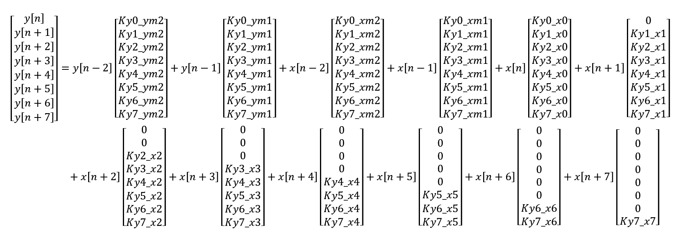
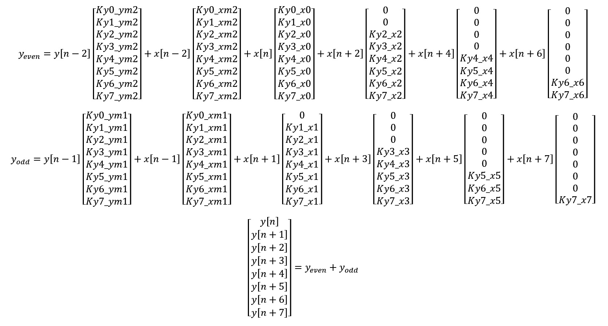
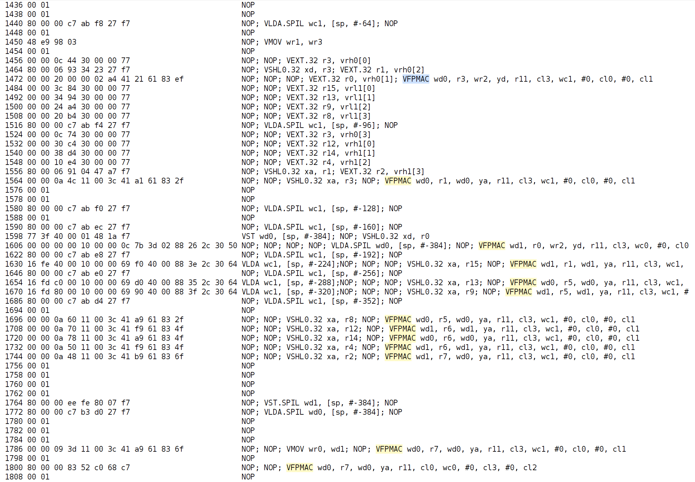
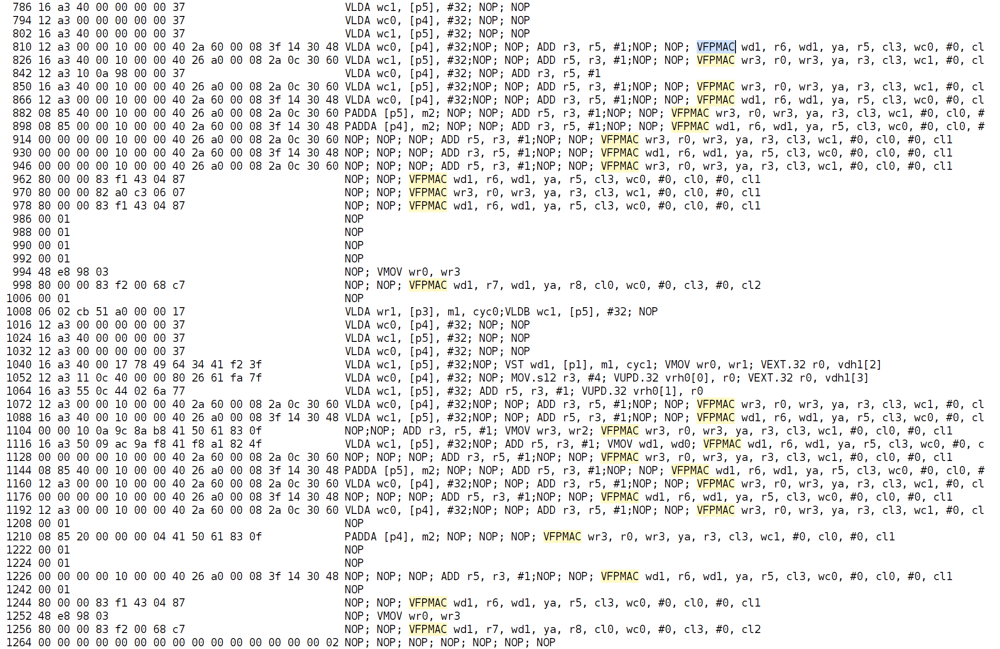
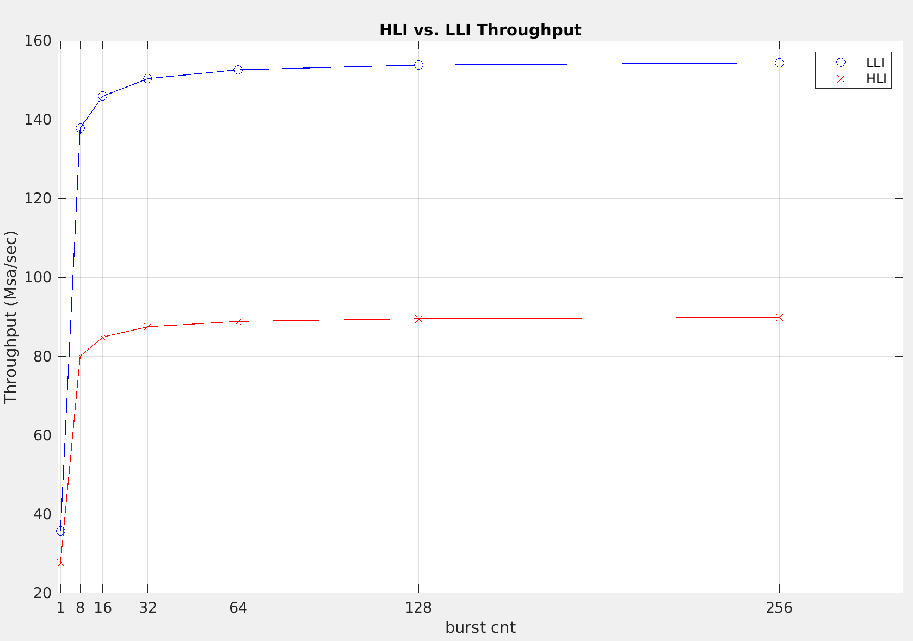
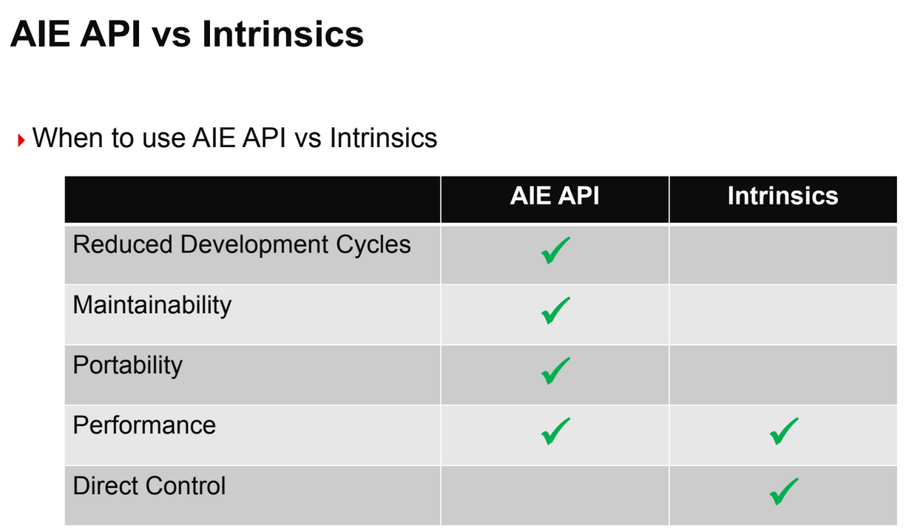

AI Engine DevelopmentSee Vitis™ Development Environment on xilinx.com See Vitis-AI™ Development Environment on xilinx.com |
Implementing an IIR Filter on the AI Engine - Part 2b¶
Version: Vitis 2022.1
Preliminaries¶
In Part 2a, we examined the generated assembler code and found that there is a NOP (no operation) between the VFPMAC (vector floating-point multiply-accumulate) mnemonics. This NOP is unavoidable as a floating-point accumulation requires 2 cycles (see Fig. 26 of AM009).
There are 2 possible solutions to “squeeze out” the NOPs to allow a floating-point multiply-accumulate on each cycle.
split the matrix-vector multiplication into 2 separate multiply-accumulate operations such that a floating-point accumulation can be performed on each cycle
use fixed-point (which uses one cycle for accumulation)
We will focus on splitting the floating-point matrix-vector multiplication in this section.
Note that instead of the “traditional” method of multiplying each row of the matrix by the column vector, we are effectively scaling each column of the matrix by the corresponding element in the vector with the multiply-accumulate API.

Thus, splitting the vector additions into even and odd parts will allow us to perform independent multiply-accumulate operations:

Also note that the AI engine has 2 load units. The Julia program aie_iir_2b.jl has been modified to split the matrix into even and odd columns and generate two separate header files.
We start by using the AI Engine APIs.
Kernel Header¶
#ifndef __KERNEL_HPP__ // include guard to prevent multiple inclusion
#define __KERNEL_HPP__
#include <adf.h> // Adaptive DataFlow header
#include <aie_api/aie.hpp> // header files for high-level intrinsics
typedef aie::vector<float, 8> Vector8f; // vector of 8 floating-point elements
typedef aie::vector<float, 16> Vector16f; // vector of 8 floating-point elements
typedef aie::accum<accfloat, 8> VAcc8f; // accumulator with 8 floating-point elements
define USE_API // comment out to use low-level intrinsics
const unsigned burst_cnt = 256; // process burst_cnt * 8 samples per function invocation
template<unsigned id>
void SecondOrderSection(
input_window<float> *idata,
output_window<float> *odata,
const float (&C_e)[48], // run-time parameter: SIMD matrix of coefficients (even columns)
const float (&C_o)[48] // run-time parameter: SIMD matrix of coefficients (odd columns)
);
#endif // __KERNEL_HPP__
Kernel Code (AI Engine API)¶
#include <aie_api/aie_adf.hpp>
#include "kernel.hpp"
template<unsigned id>
void SecondOrderSection(
input_window<float> *idata,
output_window<float> *odata,
const float (&C_e)[48], // run-time parameter: SIMD matrix of coefficients (even columns)
const float (&C_o)[48] // run-time parameter: SIMD matrix of coefficients (odd columns)
) {
static Vector8f state_reg = aie::zeros<float, 8>(); // clear states
for (auto i = 0; i < burst_cnt; i++)
//chess_prepare_for_pipelining
{
Vector8f xreg_hi = window_readincr_v<8>(idata); // fetch input samples
Vector16f xreg = aie::concat(state_reg, xreg_hi);
VAcc8f acc_e = aie::zeros<accfloat, 8>(); // even accumulator
VAcc8f acc_o = aie::zeros<accfloat, 8>(); // odd accumulator
for (auto j = 0; j < 6; j++) {
Vector8f coeff_e = aie::load_v<8>(&C_e[8 * j]); // even columns
float xreg_e = xreg[2 * j + 4];
acc_e = aie::mac(acc_e, xreg_e, coeff_e);
Vector8f coeff_o = aie::load_v<8>(&C_o[8 * j]); // odd columns
float xreg_o = xreg[2 * j + 5];
acc_o = aie::mac(acc_o, xreg_o, coeff_o);
} // end for (auto j = 0; j < 6; j ++)
acc_o = aie::add(acc_o, acc_e.to_vector()); // acc_o += acc_e
Vector8f yout = acc_o.to_vector();
// update states
state_reg = xreg_hi;
state_reg[4] = yout[6];
state_reg[5] = yout[7];
window_writeincr(odata, yout);
} // end for (auto i = 0; i < burst_cnt; i++)
} // end SecondOrderSection()
Note the 2 loops in the function:
for (auto i = 0; i < burst_cnt; i++) { // process more samples to reduce overhead
...
for (auto j = 0; j < 6; j++) { // matrix-vector multiplication
...
}
}
The outer for loop is added such that more samples can be processed during each function call, thereby reducing overhead and improving throughput.
Graph Code¶
#ifndef __GRAPH_H__ // include guard to prevent multiple inclusion
#define __GRAPH_H__
#include <adf.h> // Adaptive DataFlow header
#include "kernel.hpp"
using namespace adf;
// dataflow graph declaration
class the_graph : public graph { // inherit all properties of the adaptive dataflow graph
public:
input_plio pl_in;
output_plio pl_out;
kernel section1;
input_port cmtx_e; // input port for SIMD matrix coefficients (even columns)
input_port cmtx_o; // input port for SIMD matrix coefficients (odd columns)
// constructor
the_graph() {
// associate the kernel with the function to be executed
section1 = kernel::create(SecondOrderSection<1>);
pl_in = input_plio::create("Input", plio_32_bits, "data/input.dat");
pl_out = output_plio::create("Output", plio_32_bits, "output.dat");
const unsigned num_bytes = 8 * sizeof(float) * burst_cnt;
// establish connections
connect<parameter>(cmtx_e, adf::async(section1.in[1]));
connect<parameter>(cmtx_o, adf::async(section1.in[2]));
connect<window<num_bytes>> (pl_in.out[0], section1.in[0]); // window size in bytes
connect<window<num_bytes>> (section1.out[0], pl_out.in[0]);
// specify which source code file contains the kernel function
source(section1) = "kernel.cpp";
// !!! temporary value: assumes this kernel dominates the AI engine tile !!!
runtime<ratio>(section1) = 1.0;
} // end the_graph()
}; // end class the_graph
#endif // __GRAPH_H__
Note that the graph uses the enhanced programming model (see UG1076 (v2021.2)) which eliminates the need for a global simulation::platform variable.
Testbench Code¶
#include "kernel.hpp"
#include "graph.hpp"
#include "C1_e.h"
#include "C1_o.h"
using namespace std;
using namespace adf;
// specify the DFG
the_graph my_graph;
// main simulation program
int main() {
my_graph.init(); // load the DFG into the AI engine array, establish connectivity, etc.
my_graph.update(my_graph.cmtx_e, C1_e, 48);
my_graph.update(my_graph.cmtx_o, C1_o, 48);
my_graph.run(1); // run the DFG for the specified number of iterations
my_graph.end(); // housekeeping
return (0);
} // end main()
Analysis (using AI Engine API)¶
Generated Code¶

In the generated assembly code, note that there are 13 VFPMACs: 6 for each even and odd column, and another for summing the final accumulator results. Note that the VFPMAC instructions are not as tightly packed, i.e., some VFPMACs have other instructions between them.
Throughput¶
The burst_cnt variable determines the total number of samples processed during each function call. The inner loop processes 8 samples per iteration, so the total number of processed samples will be burst_cnt * 8.
The throughput is obtained as follows (see api_thruput.xlsx):
build and run the design
open
aiesimulator_output/default.aierun_summaryGet the
Total Function + Descendants Time (cycles)for themainfunction (num_cycles)Throughput =
clk_freq* (burst_cnt* 8)/num_cycles
The thoughput with a 1GHz clock for different values of burst_cnt are shown below.
IIR Throughput (with API) | | | | | | | | | |—————————|——-|——-|——-|——-|——-|——-|——-| |burst_cnt |1 |8 |16 |32 |64 |128 |256 | |num_samples |8 |64 |128 |256 |512 |1024 |2048 | |num_cycles (API) |289 |799 |1508 |2925 |5761 |11431 |22772 | |API Throughput (Msa/sec)) |27.68 |80.10 |84.88 |87.52 |88.87 |89.58 |89.94 |
*clk_freq: 1GHz
The AI Engine APIs are a header-only implementation which act as a “buffer” between the user and the low-level intrinsics (LLI) to increase the level of abstraction. Is it possible that the API adds some overhead?
We modify the kernel code to use low-level intrinsics (LLI).
Kernel Code (LLI)¶
#include <aie_api/aie_adf.hpp>
#include "kernel.hpp"
template<unsigned id>
void SecondOrderSection(
input_window_float *idata,
output_window_float *odata,iteration
const float (&C_e)[48], // run-time parameter: SIMD matrix of coefficients (even columns)
const float (&C_o)[48] // run-time parameter: SIMD matrix of coefficients (odd columns)
) {
static v8float state_reg = null_v8float();
for (auto i = 0; i < burst_cnt; i++) {
v8float xreg_hi = window_readincr_v8(idata);
v16float xreg = concat(state_reg, xreg_hi);
v8float acc_e = null_v8float();
v8float acc_o = null_v8float();
v8float *ptr_coeff_e = (v8float *)(&C_e[0]);
v8float *ptr_coeff_o = (v8float *)(&C_o[0]);
for (auto j = 0; j < 6; j++)
chess_flatten_loop
{
v8float coeff_e = *ptr_coeff_e++;
acc_e = fpmac(acc_e, xreg, (2 * j + 4), 0, coeff_e, 0, 0x76543210);
v8float coeff_o = *ptr_coeff_o++;
acc_o = fpmac(acc_o, xreg, (2 * j + 5), 0, coeff_o, 0, 0x76543210);
} // end for (auto j = 0; j < 6; j++)
acc_o = fpadd(acc_o, acc_e);
window_writeincr(odata, acc_o);
// update states
state_reg = xreg_hi;
state_reg = upd_elem(state_reg, 4, ext_elem(acc_o, 6));
state_reg = upd_elem(state_reg, 5, ext_elem(acc_o, 7));
} // end for (auto i = 0; i < burst_cnt; i++)
} // end SecondOrderSection()
Note the use of the chess_flatten_loop pragma. This pragma unrolls the loop completely, eliminating the loop construct. Documentation on compiler pragmas may be found in the AI Engine Lounge.
Note: In the code provided, selecting between API and LLI is performed by defining or commenting out USE_API on line 25 of kernel.hpp.
The generated assembly code is shown below.

Note the “tighter” spacing between VFPMACs. Also note that the SecondOrderSection<1> function has been “absorbed” into the main function, and the there are two unrolled matrix-vector multiplication loops, effectively halving the number of iterations of the outer loop.
The measured throughput is shown below (see lli_thruput.xlsx).
IIR Throughput (with LLI) | | | | | | | | | |—————————|——-|——-|——-|——-|——-|——-|——-| |burst_cnt |1 |8 |16 |32 |64 |128 |256 | |num_samples |8 |64 |128 |256 |512 |1024 |2048 | |num_cycles (LLI) |224 |464 |877 |1702 |3354 |6656 |13261 | |LLI Throughput (Msa/sec)) |35.71 |137.93 |145.95 |150.41 |152.65 |153.85 |154.44 |
*clk_freq: 1GHz
Comparing the API and LLI throughputs: 
LLI provides a better throughput than API for the same
burst_cntThe throughput “saturates” at around
burst_cnt= 64
Conclusions¶
The AI Engine API is intended to improve productivity by increasing the level of abstraction, relative to the low-level intrinsics.  We recommend using the AI Engine API, and only use low-level intrinsics to squeeze out more performance to meet target specifications.
Throughput may be improved using the following techniques:
Reduce function call ovehead by processing as many samples within the function as possible
For floating-point accumulation, use 2 accumulators with low-level intrinsics
Can the throughput be improved even further?
Floating-point allows 8 MACs per cycle. Using 32-bit fixed-point coefficients with 16-bit data allows 16 MACs per cycle, potentially doubling the throughput. 16-bit fixed-point coefficients with 16-bit data allows 32 MACs per cycle, potentially quadrupling the throughput. 16-bit fixed-point coefficients with 8-bit data allows 64 MACs per cycle, potentially improving the throughput by 8x.
Assuming that we stick with a floating-point implementation, doubling the number of processed samples and the number of AI engines (i.e., 2 AI engines, each processing 8 samples from a 16-sample window) may double the throughput.
Support¶
GitHub issues will be used for tracking requests and bugs. For questions go to forums.xilinx.com.
License¶
Licensed under the Apache License, Version 2.0 (the “License”); you may not use this file except in compliance with the License.
You may obtain a copy of the License at http://www.apache.org/licenses/LICENSE-2.0
Unless required by applicable law or agreed to in writing, software distributed under the License is distributed on an “AS IS” BASIS, WITHOUT WARRANTIES OR CONDITIONS OF ANY KIND, either express or implied. See the License for the specific language governing permissions and limitations under the License.
© Copyright 2021 Xilinx, Inc.